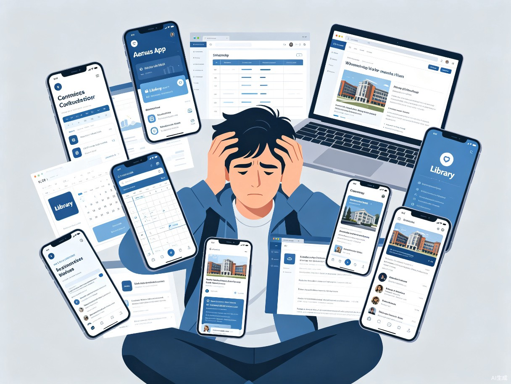
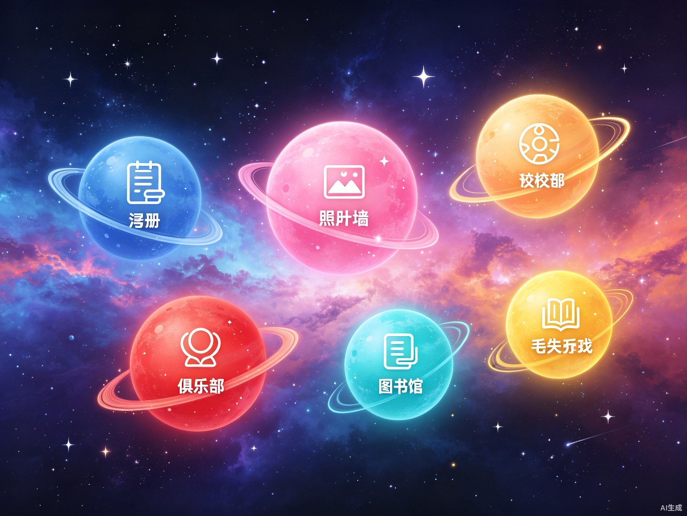

Chapter 01 创意名称与介绍
把枯燥的校园功能导航变成一次星际漫游，让学生每次打开页面都像在探索属于自己的宇宙。
想解决什么问题
现有的校园服务入口分散在各类小程序和网页中，学生查找课程表、活动信息、图书馆座位等日常功能时，需要在多个平台间反复切换。同时，校园数字化界面普遍同质化严重，缺乏情感连接与沉浸感，学生在使用过程中难以产生归属感。

为什么会想到做这个
校园生活中的点滴碎片——一节难忘的课、一场社团活动、一张随手拍下的晚霞——其实都像星际中的行星一样，各自发光又彼此关联。
灵感来源于一次深夜自习后抬头望见的星空。我们希望用手势与粒子互动的方式，让科技多一分温度与趣味，把日常的校园服务入口变成可探索的星际场景。
产品形态
这是一个基于 Web 的校园生活星际导航门户，核心是一个可交互的 3D 粒子视觉系统。用户进入页面后会看到深空场景，几颗代表不同功能的星球在轨道上缓缓漂浮。通过摄像头捕捉手部动作，用户可以用手掌的开合控制粒子模型的扩散与收缩，用手掌的移动控制旋转。

核心技术栈
Chapter 02 目标用户及痛点
面向哪些用户
以高校本科生和研究生为主，同时也面向校园教职工。核心用户群体是每天需要频繁查看课程安排、参与校园活动、使用图书馆资源的在校生。
使用场景
- 早晨起床，打开页面查看当天课程安排，规划一天的行程 早晨
- 课间浏览近期社团活动与校园新鲜事 课间
- 考试周预约图书馆座位，查看热门书籍推荐 考试周
- 丢失物品后发布或查找失物信息 随时
- 晚自习时随手记录校园里的美好瞬间并分享到拾光墙 晚间
当前痛点
如果不使用这个产品，学生需要在教务系统、图书馆预约平台、社团公众号、表白墙等多个渠道之间来回跳转，信息获取路径冗长且碎片化。大多数校园应用的界面设计停留在功能列表阶段，视觉单调、缺乏个性，学生使用后难以形成品牌记忆，更谈不上情感认同。此外，现有的校园数字产品几乎没有引入手势、体感等自然交互方式，人机交互的维度较为单一。
Chapter 03 核心交互体验
用手掌的每一次开合和移动，去操控星辰的扩散与旋转——这不是一个需要学习才能使用的工具，而是一种直觉。
手掌开合控制扩散
手掌张开时粒子向外扩散，握拳时粒子向内收缩，实时响应手势变化
手掌移动控制旋转
手掌在摄像头中的位置映射为粒子模型的旋转方向和速度
四种粒子模型预设
星云、烟花、土星、花朵——不同形态带来不同的视觉体验
五彩斑斓辉光效果
基于 UnrealBloomPass 的实时后处理辉光，粒子颜色随旋转自动变换色相
参数实时调节
颜色选择器、粒子密度滑块、辉光强度控制，打造个性化星际空间
深空背景粒子
8000颗彩色星空粒子随机散布，营造强烈的空间纵深感
Chapter 04 价值与意义
⚡ 效率提升
拾光校园星际空间将分散的校园服务入口整合为一个统一的星际导航界面，学生通过一个页面即可触达课程表、活动信息、图书馆、失物招领等核心功能，减少跨平台切换的时间损耗。星球的可视化布局让功能定位更直观，相比传统列表式导航，认知负荷更低，查找效率更高。
🌟 社会价值
在大学校园这样一个知识密集、年轻人聚集的场所，数字化产品不应该只是冷冰冰的工具。星际空间试图用沉浸式的视觉语言重建人与校园之间的情感连接——拾光墙让瞬间成为永恒，星球轨道让日常服务拥有仪式感。当技术与美学、功能与情感能够共存时，校园数字生活的质量会真正得到提升。
Chapter 05 创意产物
本创意方案已使用 TRAE Work 生成完整的可运行 HTML 文件，包含基于 Three.js + MediaPipe Hands 的实时交互 3D 粒子视觉系统。产物特点如下：
单文件零依赖部署
完整的自包含 HTML 文件，打开即可运行，无需安装任何环境
现代毛玻璃 UI
右侧模型面板、底部控制栏、左下角摄像头窗口均采用 backdrop-filter 毛玻璃风格
自定义 GLSL 着色器
顶点着色器实现 HSV 色相变换与扩散控制，片元着色器实现粒子辉光与透明度衰减
全平台浏览器兼容
支持 Chrome、Edge、Firefox 等现代浏览器，支持桌面端与移动端访问